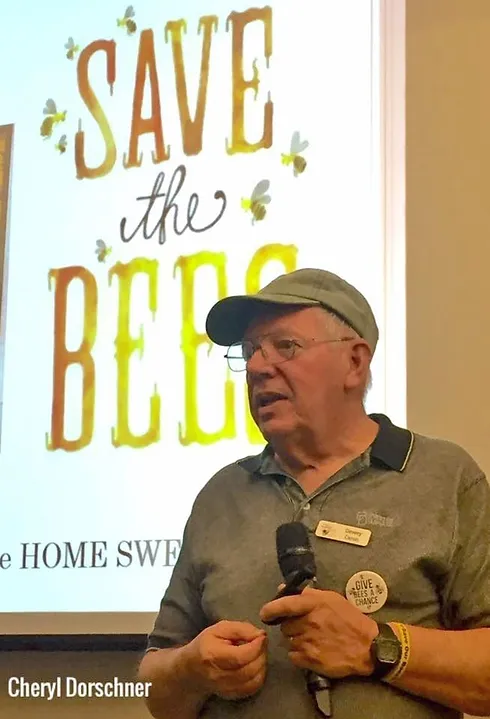

Speaker: Dr. Dewey M. Caron
Meeting Details
- Date: September 29th, 2024
- Time: 7:30 PM ET (Eastern Time)
- Topic: TBA
Speaker Biography
Dr. Dewey M. Caron is Emeritus Professor of Entomology & Wildlife Ecology, University of Delaware, & Affiliate Professor, Dept Horticulture, Oregon State University. He retired from the University of Delaware in 2009 and moved to Portland, OR to be closer to grandkids.
Dewey remains active in bee education, writing for newsletters, giving Bee Short Courses, assisting in several Master beekeeper programs, and giving presentations to local, state, and regional bee clubs. Dewey represents WAS on Honey Bee Health Coalition and is the principal author of HBHC Tools for Varroa Management and BMPs.
He is also the author of "Honey Bee Biology & Beekeeping," a major textbook used in University and Association bee courses, and has a new bee book "The Complete Bee Handbook" from Rockridge Press this year. Each book has a section on Resource hives. Autographs are gladly provided.
Dr. Dewey's Books are listed on the SWOBA Home Page.